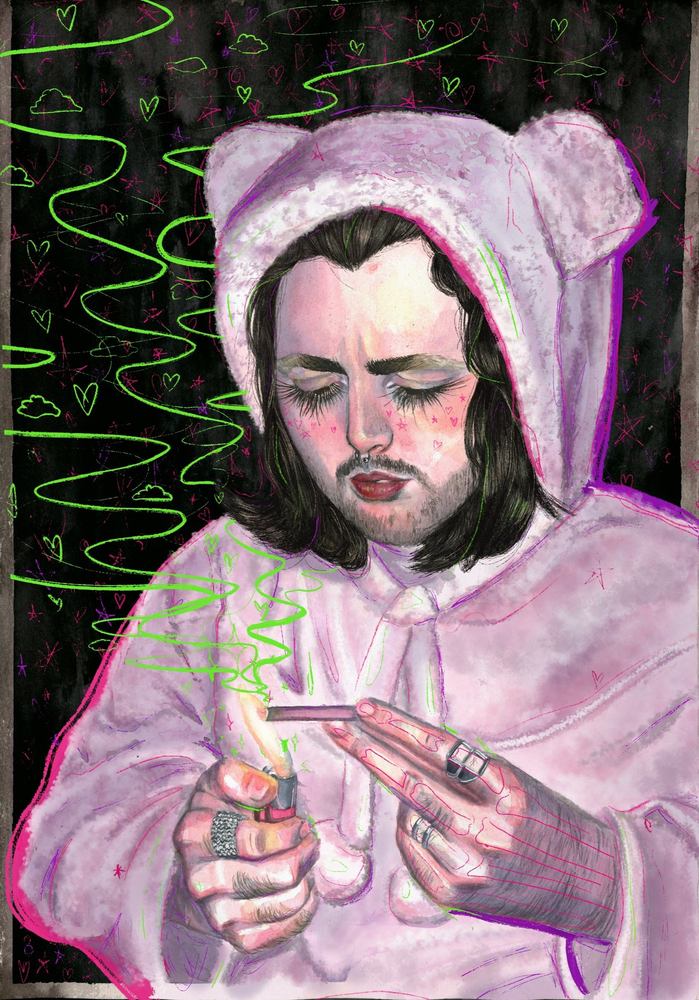

2. Sour Candy
Retratos en técnica mixta con una estética dulce y ácida

En mi tiempo libre me encanta pintar sobre fotos que he hecho con el móvil o con la cámara, dándoles un pequeño giro. A veces lo hago directamente en digital, pero normalmente prefiero mezclar lo analógico con lo digital. Tengo pensado hacer una serie grande de estas ilustraciones, pero de momento aquí puedes ver un par.
“Nio”. Retrato hecho con acuarela y terminado con Procreate.
“Miku”. Hecho con Procreate, 2023
Proyecto personal
Desde 2022